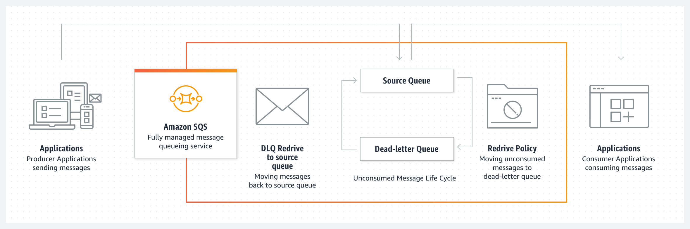

What Is Cloud Computing?
Cloud computing allows companies to access computing services via the internet without needing to purchase or set up their own infrastructure locally
There are numerous reasons why companies decide to use cloud services:
- Relying on the cloud removes the need to set up and maintain an expensive on-site data center.
- Cloud resources enable a business to quickly and cheaply build a custom IT environment that perfectly fits their requirements.
- You can access cloud-based data from anywhere and on any device as long as you have an Internet connection.
- The cloud offers performance and high-availability levels that are unrealistic for most companies.
- Cloud resources scale alongside IT needs. You can instantly add more computing resources whenever necessary. The same works in reverse: once the demand returns to normal, you scale capacity down and ensure there's no needless spending.
- Using the cloud gives continuous access to cutting-edge tech as major providers always stay at the forefront of the latest industry standards.
Models of Cloud Services

Infrastructure as a service (IaaS)
IaaS is a form of cloud computing service that offers compute, storage and networking resources on-demand, usually on a pay-as-you-go basis. Businesses can purchase resources on-demand and as-needed instead of having to buy the hardware outright. While IaaS gives you virtualized resources such as servers, disks, networks, and IP addresses, you are still responsible for administering the operating system, data, applications, middleware and runtimes. A dashboard or an API gives you complete control over the entire infrastructure. IaaS gives you the flexibility to purchase only the computing you need and scales them up or down as needed. If you are looking to migrate an application as-is from an on-premises data center to the cloud, choose the IaaS model. You will be able to proceed with the migration with minimum changes.
Platform as a Service (PaaS)
PaaS provides a framework for application creation and deployment. The technical stack (e.g., AWS Beanstalk, Google App Engine) required for application development is available on the cloud, which requires no download or local installation. With PaaS, developers can focus on building their applications without having to worry about operating systems, software updates, storage or infrastructure. You get a “platform” with built-in software components for both hardware and software such as runtime libraries, tools, applications, email and HTTP servers. This allows developers to rapidly develop, run, and manage their own apps without having to build and maintain the infrastructure or platform usually associated with the process. PaaS applications are scalable and highly available as they take on certain cloud characteristics.
Software as a Service (SaaS)
SaaS) — это веб-модель развертывания программного обеспечения, которая делает программное обеспечение доступным через веб-браузер. Как пользователю программного обеспечения SaaS вам все равно, где размещается программное обеспечение, какую операционную систему оно использует или на каком языке оно написано. Программное обеспечение SaaS доступно с любого устройства, если у вас есть подключение к Интернету. С SaaS вы не несете капитальных затрат на покупку серверов или программного обеспечения. Поставщик услуг ограждает вас от обслуживания программного обеспечения, и вы просто подключаетесь к приложению SaaS через консоль или API. Типичные примеры включают Microsoft Office 365, Intuit, Salesforce CRM, Zoom, ZoomInfo, Dropbox, Google Apps и многие другие, предназначенные для использования конечными пользователями.
Gartner Magic Quadrant
Amazon Web Services (AWS)
AWS is the world’s most comprehensive and broadly adopted cloud platform, offering over 200 fully featured services from data centers globally. Millions of customers—including the fastest-growing startups, largest enterprises, and leading government agencies—are using AWS to lower costs, become more agile, and innovate faster.
Full-Stack Service
Availability
AWS Free Tier
Serverless Architectures
A serverless architecture is a way to build and run applications and services without having to manage infrastructure. Your application still runs on servers, but all the server management is done by AWS. You no longer have to provision, scale, and maintain servers to run your applications, databases, and storage systems
By using a serverless architecture, developers can focus on their core product instead of worrying about managing and operating servers or runtimes, either in the cloud or on-premises. This reduced overhead lets developers reclaim time and energy that can be spent on developing great products which scale and that are reliable.
Use case serverless architecture

IAM
(Identity and Access Management)

IAM users can be:
- Privileged administrators who need console access to manage your AWS resources
- End users who need access to content in AWS
- Systems that need privileges to programmatically access your data in AWS
General Use Cases for Creating IAM Users
- It is a security best practice to not use your root account because the root account grants access to all services and resources. Grant users the minimum amount of privilege necessary, which is known as least privilege
- You have other people in your group who have varied access and authorization permissions. When you use IAM users, it is easier to assign policies to specific users that access specific services and associated resources
- An IAM user can use the AWS CLI
- An IAM user can use a role
Storage S3
Amazon Simple Storage Service (Amazon S3) is an object storage service offering industry-leading scalability, data availability, security, and performance.
With cost-effective storage classes and easy-to-use management features, you can optimize costs, organize data, and configure fine-tuned access controls to meet specific business, organizational, and compliance requirements

It is possible to load data directly into S3 Bucket, but it is more correct to use Amazon API Gateway and Lambda-functions

AWS Lambda
WS Lambda is a serverless, event-driven compute service that lets you run code for virtually any type of application or backend service without provisioning or managing servers. You can trigger Lambda from over 200 AWS services and software as a service (SaaS) applications, and only pay for what you use.
Amazon RDS
Amazon Relational Database Service (Amazon RDS) is a collection of managed services that makes it simple to set up, operate, and scale databases in the cloud. Choose from seven popular engines — Amazon Aurora with MySQL compatibility, Amazon Aurora with PostgreSQL compatibility, MySQL, MariaDB, PostgreSQL, Oracle, and SQL Server — and deploy on-premises with Amazon RDS on AWS Outposts.
RDS offers 6 databases to choose from
Possible application RDS

Amazon SQS
Amazon Simple Queue Service (SQS) is a fully managed message queuing service that enables you to decouple and scale microservices, distributed systems, and serverless applications. SQS eliminates the complexity and overhead associated with managing and operating message-oriented middleware, and empowers developers to focus on differentiating work. Using SQS, you can send, store, and receive messages between software components at any volume, without losing messages or requiring other services to be available.
Get started with SQS in minutes using the AWS Management Console, Command Line Interface or SDK of your choice, and three simple commands. SQS offers two types of message queues. Standard queues offer maximum throughput, best-effort ordering, and at-least-once delivery. SQS FIFO queues are designed to guarantee that messages are processed exactly once, in the exact order that they are sent.